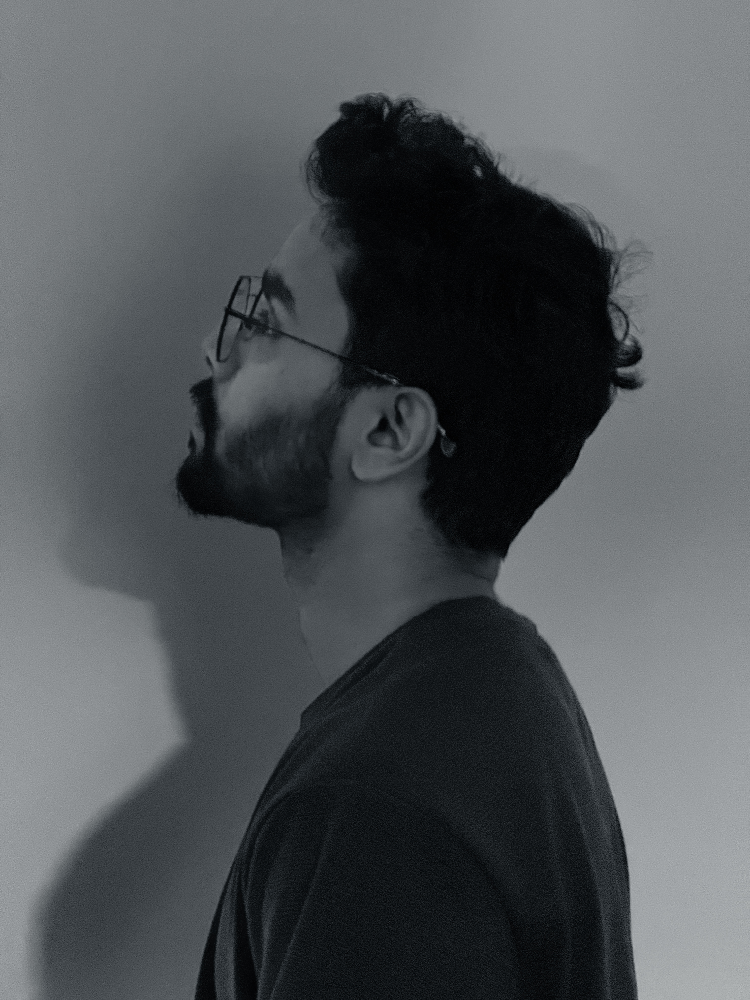

Interesting Fact:I'm a visual storyteller with an insatiable curiosity for capturing life's unscripted moments. Through my lens, every corner of the world becomes a canvas, and every fleeting instant transforms into a timeless narrative.
Armed with my camera, I find myself drawn to the poetry of everyday life - from the soft whispers of dawn light to the vibrant chaos of city streets. Photography isn't just my passion; it's my way of conversing with the world around me.
Writing complements my visual journey, allowing me to weave words with images, creating deeper, more resonant stories. My wanderlust drives me to seek out untold stories in unknown places, each new destination adding another chapter to my ongoing visual diary.
The dream that propels me forward? To become a travel photographer, bridging cultures and perspectives through my work. I believe every journey, whether through familiar streets or distant lands, holds countless stories waiting to be discovered and shared.